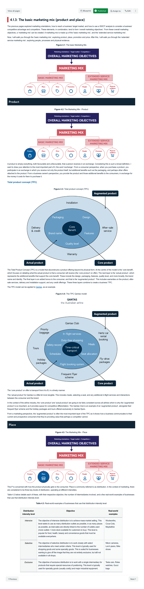
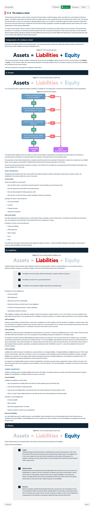
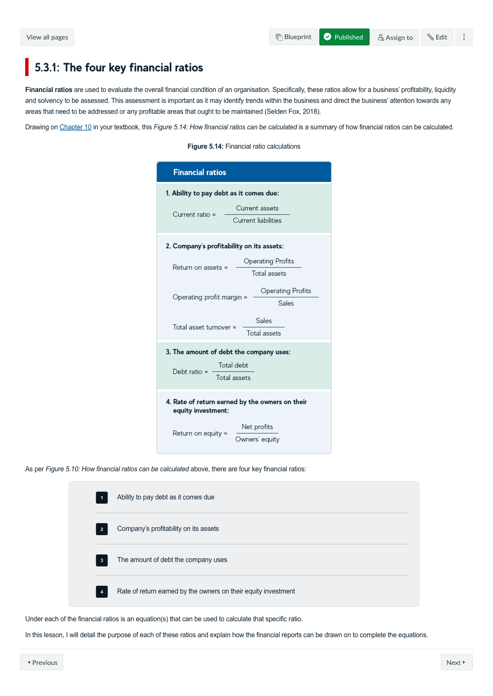
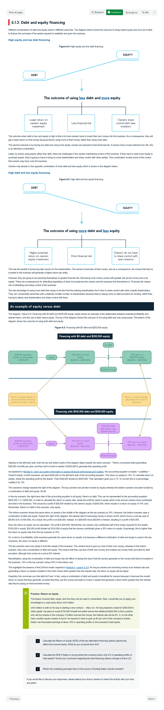
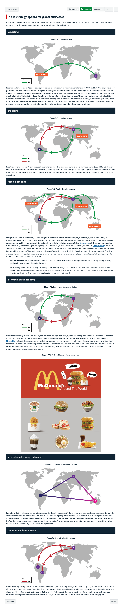
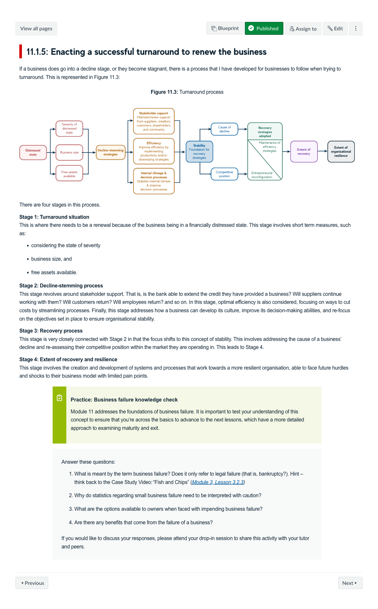

Course Description
This course uses a life-cycle perspective of a firm to develop an understanding of the interrelated nature of the different business disciplines required to establish and grow a business successfully. Using an online business simulation game, student groups compete to grow a business in a virtual world while learning about the roles of entrepreneurship, strategy, marketing, finance, business structures, management, accounting, taxation, and exit and succession planning. The course will appeal to those interested in starting their own business, as well as to those intending to become business advisers, leaders, or policymakers.
Learning Outcomes
- Describe the different stages of the lifecycle of a business and explain the role and interrelated nature of the major business disciplines (entrepreneurship, strategy, marketing, finance, accounting, management & law) required to lead a business through its lifecycle stages.
- Apply concepts from the major business disciplines, analyse information and make decisions holistically to lead a business through its lifecycle stages.
- Reflect on the interpersonal skills and processes required to work effectively in a team environment.
Learning Experience
The course was purposefully designed to balance learning theoretical concepts and practical application, enabling learners to regularly put into practice what they've learnt to gain a deeper understanding. Teams are established and use an online business simulation game called Mike's Bikes. They compete with other teams to make key decisions to grow a virtual business. This framework allows students to learn and practice the roles that entrepreneurship, strategy, marketing, accounting, finance and management play in creating a sustainable business. The simulator provides students with a safe space to experiement and learn from any mistakes they make.
Topics
- The business landscape and new venture creation
- Alternative pathways for entry into business
- Business strategy, business models and business plans
- Developing a marketing plan
- Using accounting information to assess financial performance and position
- Financing a business
- Strategies for growth - products, distribution channels, and international markets
- Leading and managing growth and transitions
- Business law fundamentals
- Business tax fundamentals
- Maturity and Exit - renewal versus failure; sale versus succession
Development Team
Chris Graves
Course Author
Lead
Mark Giancaspro
Course Author
Collaborator
Sylvia Villios
Course Author
Collaborator
Rebecca Dolan
Course Author
Collaborator
Andrew Beatton
Learning Designer
Lead

Sinead Coulter
Learning Designer
Collaborator
Assessments
-
Content and skills evaluations
Multiple Choice Questions
Learners complete quizzes throughout the course to test their understanding and skills development.
30%
-
Individual Reflections on the Simulation
Learning Journal
Each of the reflective journal entries focus on personal experiences when working in teams to complete the MikesBikes simulation to capture decision points, predictions and communication between the team.
40%
-
Simulation Group Work
Professional Simulation, Oral Defence
Learners work as a team to set up a virtual bike business in the MikesBikes simulation and make weekly decisions to try and increase the shareholder wealth of your virtual bike business. The team then present to the class and summarise the underlying reasons for their performance and what they collectively learnt about working effectively.
30%
Snapshots






Learning Resources
-
Team Expectations Agreement
This H5P helps to create an agreement for the team to work together, stepping through the key decisions they need to make to form a team, establish communication, responsibility and accountability for the team.
-
AIDA Model
The AIDA concept (Awareness, Interest, Desire and Action) is a model that outlines the stages of the consumer decision-making process. The concept helps businesses understand their consumers in relation to what promotional tactics will be most effective depending on where the consumer is at with their decision-making process of “to buy the product, or not?”.

-
Leadership and management approaches across the stages of business growth
This graphic illustrates the different leadership and management approaches required for diffferent stages of business growth and highlights the different aspects of leadership and management that change.